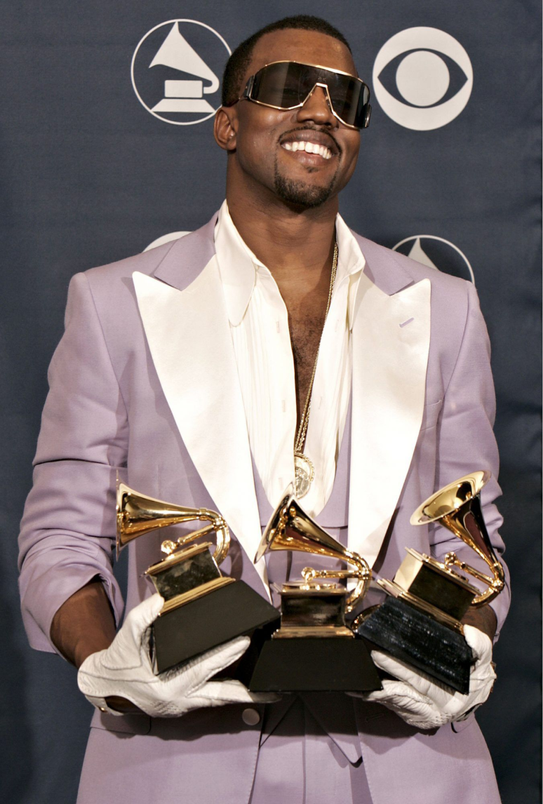

Grammy Awards (24 Wins, 75 Nominations)
Best Rap Album
- The College Dropout (2005)
- Late Registration (2006)
- Graduation (2008)
- My Beautiful Dark Twisted Fantasy (2012)
Best Rap Song
- “Jesus Walks” (2005)
- “Diamonds from Sierra Leone” (2006)
- “Good Life” (2008)
- “All of the Lights” (2012)
- “Niggas in Paris” (with Jay-Z) (2013)
Best Rap Performance
- “Gold Digger” (2006)
- “Stronger” (2008)
- “Otis” (with Jay-Z) (2012)
Best Rap/Sung Collaboration
- “All of the Lights” (2012)
- “Ultralight Beam” (2021)

Kanye West at Grammy Award 2022
BET Awards
Best Male Hip-Hop Artist (multiple nominations, 1 win)
Best Collaboration
- “Run This Town” (with Jay-Z & Rihanna) (2010)
- “All of the Lights” (2011)
Billboard Music Awards
- Top Gospel Artist (2021)
- Top Christian Album - Jesus Is King (2020)
- Top Gospel Album - Jesus Is King (2020)
MTV Video Music Awards (VMAs)
- Best Male Video – “Jesus Walks” (2005)
- Best Special Effects – “Stronger” (2007)
- Michael Jackson Video Vanguard Award (2015) — Lifetime Achievement Honor
Other
- TIME 100 Most Influential People – Multiple times
- Clio Awards – For Yeezy fashion campaign and marketing work
- Cannes Lions Award – For creative work in advertising (with DONDA)
And that’s why he’s the GOAT